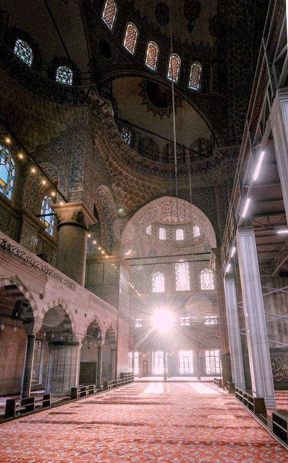

The word "islam" means "submission to the will of God"
followers of Islam are called Muslims.
Muslims are monotheistic and worship one. all-knowing God . whom is Arabic is known as Allah.
Muslim Prayer
Shahada : to deciare one's faith in God and belief in Muhammad.
Salat: to pray five times a day (at dawn, noon, afternoon, sunset, and evening)
Zakat: to give to those in need.
Sawn to fast during Ramadan.
Hajj:To make a pilgrimage to Mecca at least once during a person's lifetime if the person is able.
Muslim clothing
Rules of hijab for men
According to the Qur'an, both men and women should dress in ways that are halaal, meaning permissible, throughout their lives.
According to the traditional view in Sunni Islam, men must cover from their belly buttons to their knees, though they differ on whether this includes covering the navel and knees or only what is between them. It is also mentioned in the Qur'an that it is haraam for men to wear clothing articles made of silk or animal skinned that has not been tanned. Conversely, men are permitted to wear anything made of wool, camel hair, or goat hair. It is explicitly taught that men should not wear clothing that is see-through or that doesn't cover body parts that are considered intimate, known as ‘awrah. Lastly, it is not halaal for men to wear clothing that is similar to or imitates clothing that a woman would wear. [14]
Rules of hijab for women
According to the traditional view in Sunni Islam, women must cover everything except their hands and faces, and their feet may be exposed in the Hanafi school.
Ramadan
During Ramadan, Muslims abstain from eating any food, drinking any liquids, smoking cigarettes, and engaging in any sexual activity, from dawn to sunset. That includes taking medication (even if you swallow a pill dry, without drinking any water)
